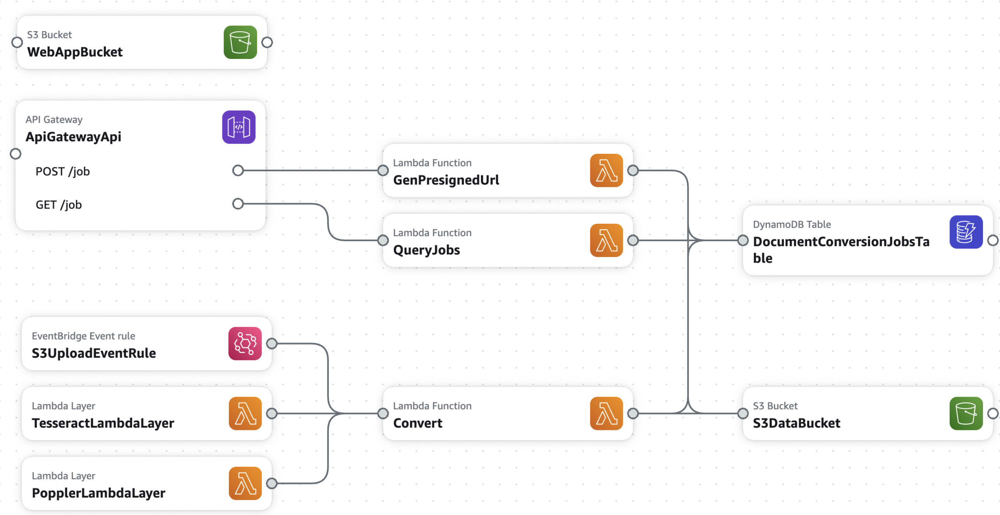

About this project
This is an open source, serverless version of a service I built at my previous job at State Street, built on AWS.
Project Architecture
Below is the architecture diagram of the document conversion service:
Workflow
- Upload File: The user selects a local file and presses the "Upload" button.
- Generate Presigned URL: The frontend makes a request to the GenPresignedUrl Lambda function.
- Upload to S3: The file is uploaded to the S3 bucket via the presigned URL.
- Trigger Lambda: Once the file is uploaded, an S3 event (via EventBridge) triggers the Convert Lambda function.
- Document Conversion:
- Retrieve Results: The frontend periodically checks the status of the job, and once completed, the converted document links are provided to the user for download.
The open source software was installed using Lambda Layers (see this repo).